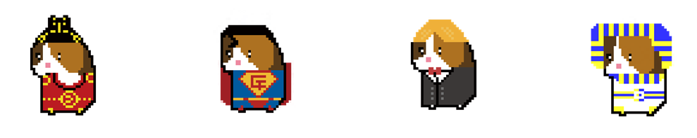
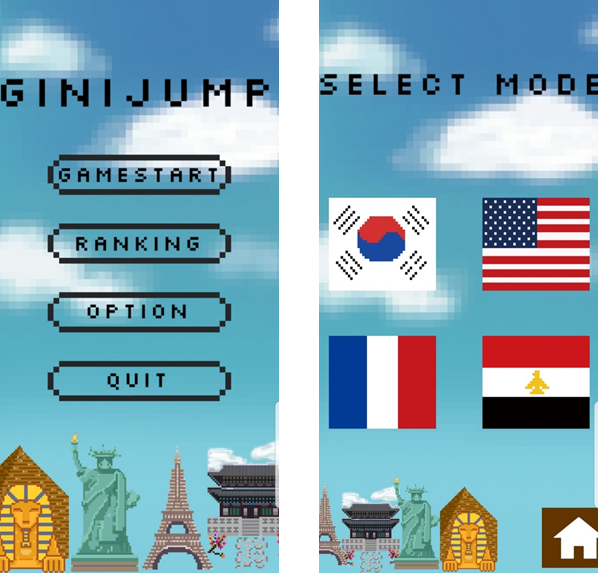
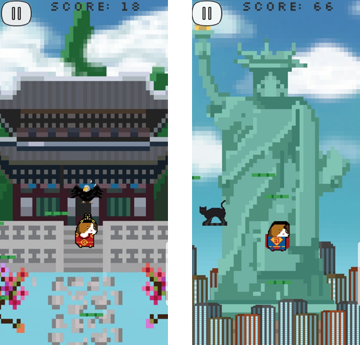
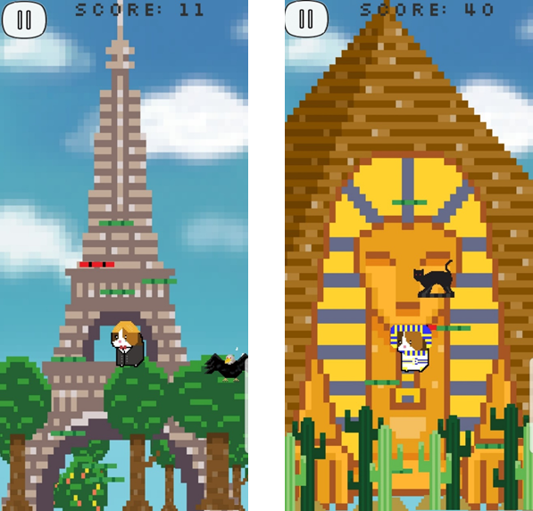
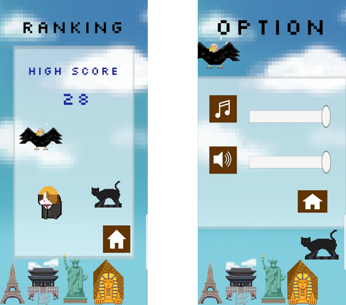
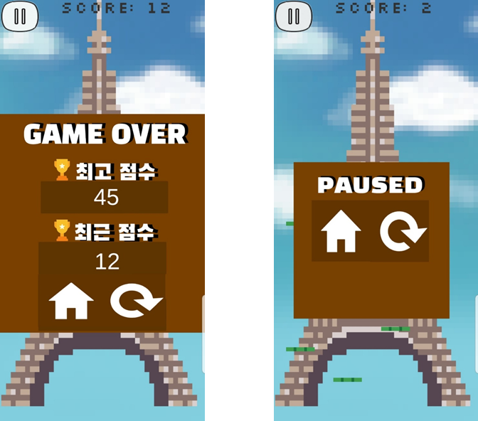

모바일 게임 기획과 제작
코로나19 팬데믹 시기, 여행에 대한 대리 만족을 주는 '방구석 세계 여행' 콘셉트의 2D 모바일 점프 아케이드 게임입니다.
자이로센서 조작과 각국 랜드마크를 담은 픽셀 아트 배경을 만들어, 유니티로 앱 출시까지 마쳤습니다.
문서 소개
자이로센서로 조작하는 2D 점프 게임을 기획해 실제 앱으로 출시한 기록입니다.
팀
4인
대학 재학 중
기간
15주
출시까지
테마
4개국
픽셀 아트 직접 제작
출시까지 가기 위해 내린 선택
만들 수 있는 쪽을 골랐습니다
창의성 최고점 대신 제작 용이성이 높은 후보를 택해 15주 안에 출시까지 끝냈습니다
조작을 자이로로 갈았습니다
설명이 거의 필요 없는 조작을 얻고, 누워서 하는 상황은 내줬습니다
테마마다 기믹을 붙였습니다
배경만 바꾸면 다른 벽지입니다. 나라마다 기믹이 하나씩 있어야 콘텐츠가 됩니다
분석 문서가 아니라, 대학 재학 중 4인 팀으로 개발해 실제 출시까지 완료한 모바일 게임입니다.
자이로센서로 기기를 기울여 점프 궤도를 제어하며, 각국 랜드마크를 픽셀 아트 배경으로 구현했습니다.
기재된 담당 범위는 4인 중 본인이 맡은 영역입니다.
캐릭터 선택 화면
늘보런, 개미핥기 등 동물을 후보군에 두고 점수화하여
제작 및 협업 지표가 가장 우수한 '기니점프'로 최종 확정
게임 기획서 작성, 15주 마일스톤(주차별 목표) 수립과 진척도 관리
메인·테마 선택·랭킹·옵션·일시정지·게임 오버 UI 에셋 제작, 배경 스크롤 로직 구현
배경음 선정, 실기 빌드 후 QA 총괄과 버그 수정·최적화
캐릭터 원화

국가 테마에 맞춰 캐릭터 코스튬과 외형을 픽셀 아트로 그렸습니다.
나라를 바꾸면 캐릭터 모습도 함께 바뀝니다.
기기를 좌우로 기울여(자이로센서) 점프 궤도를 조절합니다. 버튼 설명이 필요 없는 조작입니다.

밟으면 더 높이 도약하는 '슈퍼 점프 발판'과 플레이어를 방해하는 '장애물'을 배치했습니다.
아래 4개국 테마는 실제 플레이 화면입니다.
일반 / 슈퍼 점프
고양이 / 독수리



최고 점수를 기록하는 랭킹·옵션 화면

일시 정지와 게임 오버 팝업
4개국 외에도 랜드마크 에셋만 더하면 테마를 늘릴 수 있는 구조입니다.
랭킹으로 점수를 겨루게 해 다시 플레이할 이유를 만듭니다.
외산 게임이 독점하던 점프 게임 시장의 틈새를 겨냥해, 캐주얼한 국산 창작물로 출시까지 완주했습니다.
흥행 여부는 이 문서의 범위에 없습니다.
4인 · 15주 · 출시까지가 조건이었습니다. 무엇을 얻고 무엇을 내줄지 항목마다 정하고 갔습니다.
캐릭터 선정
창의성을 내주고 제작 용이성을 샀습니다
창의성 최고점인 개미핥기 4점 대신 2점짜리 기니점프를 골랐습니다. 제작 용이성 4점, 협업 3점이 이유입니다.
자이로 조작
직관성을 사고 플레이 상황을 내줬습니다
설명이 필요 없는 조작을 얻었지만 누워서나 이동 중에는 쓰기 어렵습니다. 터치를 옵션으로 함께 두면 대부분 풀립니다.
테마 확장
에셋을 늘리는 것과 사람이 남는 것은 다릅니다
배경만 바뀌고 발판과 장애물이 같으면 새 테마는 다른 벽지입니다. 나라마다 기믹을 하나씩 붙여야 콘텐츠가 됩니다.
지니점프 모바일 게임 기획과 제작
Game Development Archive © 허재석